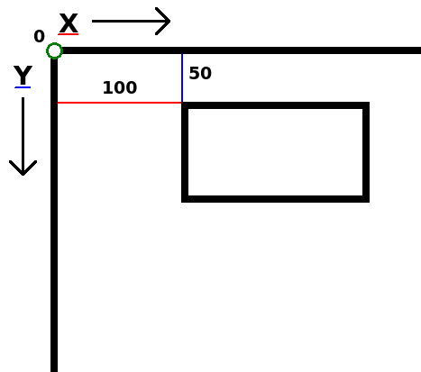

Now we can start with what I like to call "The fun part". We're going to make stuff move!
Let's start with the 3 main callbacks.
function love.load()
end
function love.update()
end
function love.draw()
endNext, we draw a rectangle.
function love.draw()
love.graphics.rectangle("line", 100, 50, 200, 150)
endThe second and third argument of this function are the x and y position.
x means "horizontal position on the screen". 0 is the left of the screen.
y means "vertical position on the screen". 0 is the top of the screen.

Now we want to make the rectangle move. It's time to start thinking like a programmer. What exactly needs to happen in order for the rectangle to move to the right? The x-position needs to go up. 100, 101, 102, 103, 104, etc. But we can't change 100 to 101. 100 is simply 100. We need to have something that can change in any number we want it to be. That's right, a variable!
In love.load, create a new variable called x, and replace the 100 in love.graphics.rectangle with x.
function love.load()
x = 100
end
function love.draw()
love.graphics.rectangle("line", x, 50, 200, 150)
endSo now the x-position of our rectangle is the value of x.
Note that the variable name x is just a name. We could've named it icecream for that matter. Functions don't care about variable names, it only cares about its value.
Now we want to make the rectangle move. We do this in love.update. Every update we want to increase x by 5. In other words, x needs to be value of x + 5. And that's exactly how we write.
function love.update()
x = x + 5
endSo now when x equals 100, it will change x into 100 + 5. Then next update x is 105 and x will change into 105 + 5, etc.
Run the game. The rectangle should now be moving.
We got a moving rectangle, but there's one small problem. If you were to run the game on a different computer, the rectangle might move with a different speed. This is because not all computers update at the same rate, and that can cause problems.
For example, let's say that Computer A runs with 100 fps (frames per second), and Computer B runs with 200 fps.
100 x 5 = 500
200 x 5 = 1000
So in 1 second, x has increased with 500 on computer A, while on computer B x has increased with 1000.
Luckily, there's a solution for this: delta time.
When LÖVE calls love.update, it passes an argument. Add the parameter dt (short for delta time) in the love.update, and let's print it.
function love.update(dt)
print(dt)
x = x + 5
endDelta time is the time that has passed between the previous and the current update. So on computer A, wich runs with 100 fps, delta time on average would be 1 / 100, which is 0.01.
On computer B, delta time would be 1 / 200, which is 0.005.
So in 1 second, computer A updates 100 times, and increases x by 5 x 0.01, and computer B updates 200 times and increases x by 5 x 0.005.
100 x 5 * 0.01 = 5
200 x 5 * 0.005 = 5
By using delta time our rectangle will move with the same speed on all computers.
function love.update(dt)
x = x + 5 * dtNow our rectangle moves 5 pixels per second, on all computers. Change 5 to 100 to make it go faster.
We use a variable that we increase on each update to make the rectangle move. When increasing we multiply the added value by delta time. Delta time is the time between the previous and current update. Using delta time makes sure that our rectangle moves with the same speed on all computers.